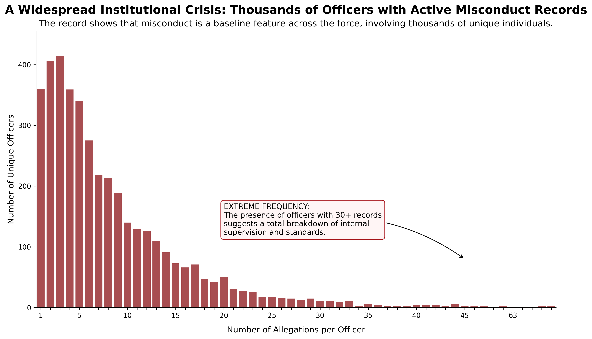
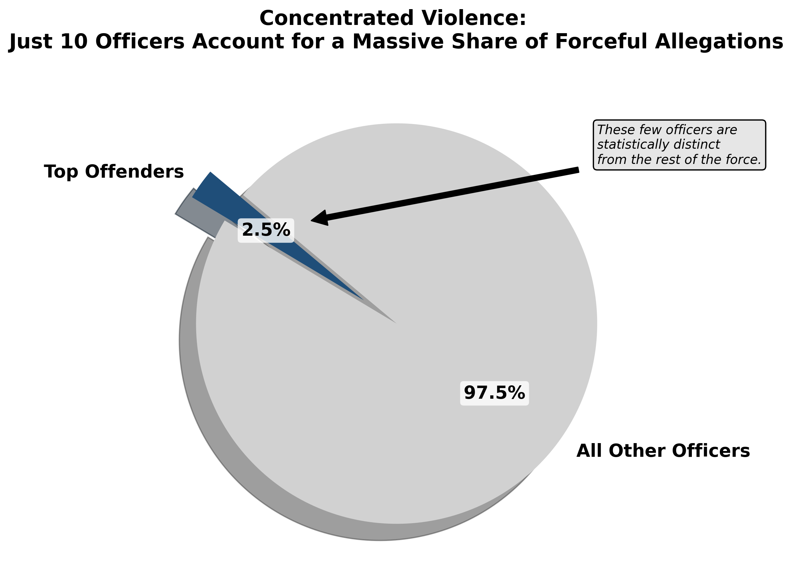

Proposition: [STATE PROPOSITION]
FOR the Proposition

Design Decisions and Rationale:
- Title and Subtitle Framing (-1): The title doesn't merely describe the data, it interprets it. By calling misconduct a "baseline feature across the force" in the subtitle, the reader's conclusion is primed before they even examine the bars. This framing works precisely because a neutral description of the graph would leave interpretation open; instead, the subtitle closes that gap and guides the reader toward a specific takeaway. However, leading with such a strong claim before the reader has seen any data risks coming across as biased, which could cause skeptical readers to distrust the visualization before engaging with it. We also considered using only "A Widespread Institutional Crisis" as the title alone, but found it too vague to reliably lead the reader to our intended conclusion without the added specificity of the subtitle.
- Callout Box as Editorial Commentary (-1): The callout box doesn't just point something out, it tells you what to think. By labeling the right tail "EXTREME FREQUENCY" and declaring it proves "a total breakdown of internal supervision," the annotation plants a conclusion inside the chart itself, making an opinion feel like a data-driven fact. This worked well because including an interpretation rather than a plain description nudges the reader toward our intended takeaway instead of leaving it open-ended. However, the strong language could feel heavy-handed to a skeptical reader, potentially signaling that the chart has an agenda rather than presenting objective findings. We also considered omitting the callout entirely, but without it, the significance of officers having 30+ complaints would likely go unnoticed.
- Normalization or Baseline Comparison (-2): The y-axis shows raw officer counts with no context, no total force size, no comparison to other departments, no time period. Saying 400 officers had exactly one allegation sounds alarming in isolation, but could represent a tiny fraction of the overall force. Omitting this context keeps the absolute numbers front and center and prevents the reader from gauging whether the scale is actually unusual. This worked well because raw numbers feel more dramatic than percentages or rates. However, a careful reader who knows the total force size could easily deflate the findings themselves, which weakens the chart's impact for anyone who does that quick math. We also considered filtering the data to a specific window like 2015 onward, but decided against it since cherry-picking a time range would have made the manipulation more obvious rather than letting the numbers speak for themselves.
AGAINST the Proposition

Design Decisions and Rationale:
- Annotation as Editorial Commentary (-1): The callout box declaring these officers are "statistically distinct from the rest of the force" embeds a conclusion directly into the chart. "Statistically distinct" sounds scientific and authoritative, but no methodology or test is cited — it's an assertion dressed up as a finding. This worked well because the technical language gives the claim an air of legitimacy that readers are unlikely to question. The risk is that a statistically literate audience might immediately ask what test was run or what "distinct" actually means, which could undermine credibility. We considered leaving the annotation out entirely, but felt the explicit claim added a layer of authoritative justification that the visual separation alone couldn't provide.
- Color Contrast to Direct Attention (0): Using a dark navy slice against a light grey majority is a standard way to highlight a category of interest, which is exactly what makes it effective here. The neutral color choice makes the chart feel less overtly manipulative, lending it a veneer of objectivity that compounds the deception elsewhere. That said, it only goes so far: a reader who notices the 2.5% label may still instinctively read the slice as tiny regardless of color. We also considered using red to make the slice stand out more, but felt that would push the narrative too aggressively and undermine the chart's credibility.
- 3D Pie Chart Distortion (-2): The 3D perspective tilt makes the small front slice (the top offenders at 2.5%) appear larger than it actually is relative to the grey majority which adds visual drama and makes the chart feel more striking and authoritative than a flat version would. What worked well was the added sense of weight and importance; what didn't was that the distortion is subtle enough that a careful reader might not notice it, limiting its impact. We considered both a flat pie and a bar chart, but settled on the 3D pie because it felt more visually commanding while still letting the small slice register as meaningful.
Final Reflection
[WRITE FINAL REFLECTION PARAGRAPHS HERE.]